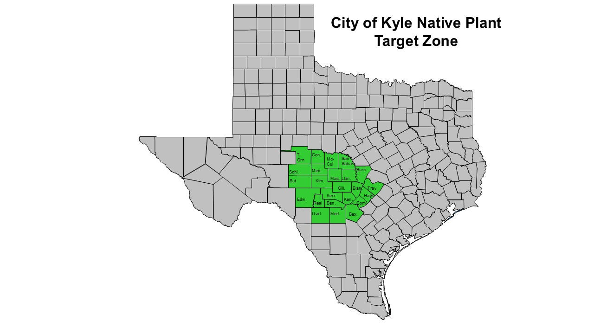

Scores are benchmark-normalized. The strongest documented target-zone plant is set to 100, and every other plant is compared to that standard. In the current dataset, Quercus virginiana is the benchmark. Ecological score shows direct animal-use signal. Balanced score adds evidence strength, target-zone confidence, native-status weighting, and non-native/invasive caution. A low score usually means verified data are thin for that category; it does not mean the plant has no ecological value.
| Compare | Plant | Status | Direct claims | Grades | Ecological / balanced scores | Category breakdown | Flags / value labels | Details |
|---|
This dashboard compares plants by source-backed direct animal use: host use, pollen or nectar use, fruit, seed, nut, browse, nesting/cover use, and mammal plant-food records. It does not claim to show every interaction in nature. A blank or low score usually means this version has fewer verified records, not that the plant has no value.
Photos from iNaturalist are visual aids only. They are not used as scoring evidence.
This rule keeps recommendations focused on plants that are not just Texas natives, but locally appropriate for the Edwards Plateau / Blackland Prairie transition around Kyle and Hays County. Review-only plants can still show animal interactions, but they are not treated as planting recommendations until target-zone status is checked.
